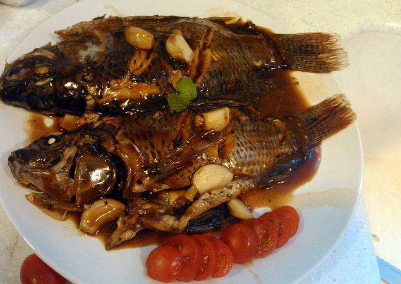

If you love adobo and you love fish, try this Adobong Tilapia Recipe. Simple, easy and quick to cook. Just add all ingredients in the pot. It’s ready in a matter of few minutes!

Ingredients
2-3 medium-sized tilapia, slice into serving pieces
1/4 cup soy sauce
1/4 cup vinegar
1/2 cup water
5 cloves garlic, minced
1 onion, chopped
1 thumb-sized ginger, chopped
2 pieces bay leaves
1/2 teaspoon peppercorns
2 pieces green chili
sugar, salt and pepper to taste
3 tablespoons vegetable oil
Instructions
In a pot, place half of garlic, onion and ginger.
Then add tilapia and pour in water, soy sauce, vinegar and vegetable oil.
Next, add in remaining garlic, onion, ginger, bay leaves and peppercorns.
Let it boil using medium heat. Simmer over low heat and add green chili. Season with salt to taste if needed.